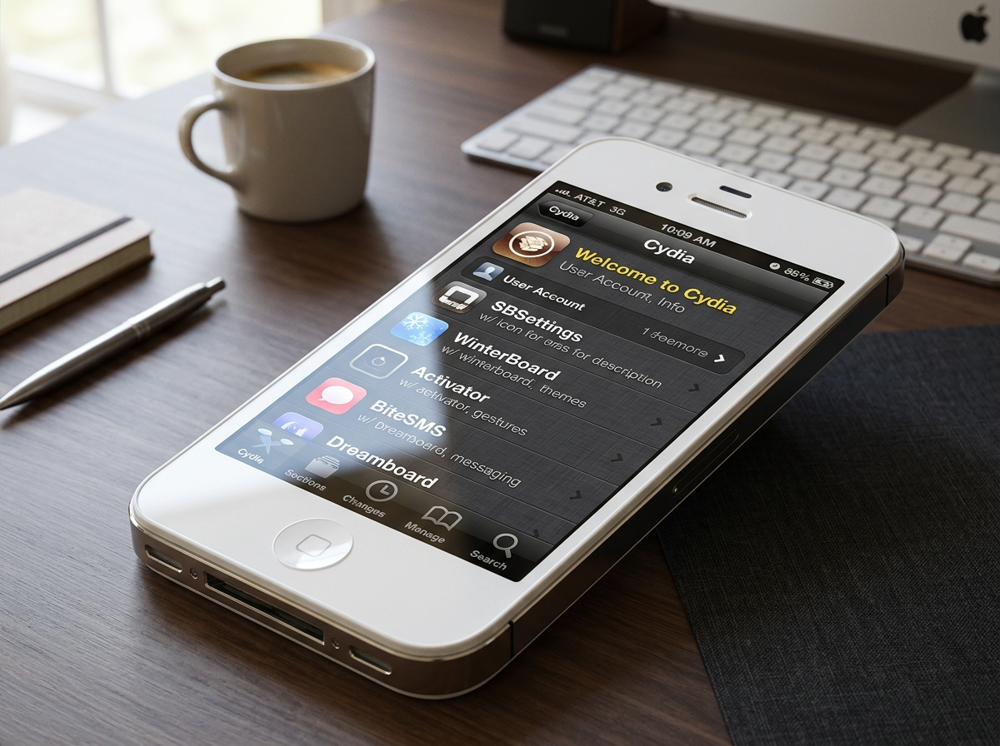

Find every essential tweak, fix, and service for your legacy iOS devices directly in our official Cydia repository. Explore our extensive collection of in-depth guides and documentation to bring your classic devices back to life.
https://theca1n.github.io/repo

Greetings! I'm Can Zaptçıoğlu, the creator and maintainer of XC-Legacy.
This portal is dedicated to preserving vintage Apple hardware and classic iOS releases (iOS 3, 4, 5, 6, and 7). As official Apple servers, SSL certificates, and legacy APIs retire over time, classic iDevices often lose essential functionality. Our mission is to keep vintage hardware operational, productive, and enjoyable through reverse proxies, custom substrate tweaks, patch packages, and detailed documentation.
Whether you are reviving an iPhone 4S on iOS 6.1.3, setting up a retro iPad 2 music server, or developing custom 32-bit dylibs in Xcode, XC-Legacy provides everything you need in one centralized hub.
Restores connection to the legacy iTunes & App Store server architecture on iOS 4.3 through 6.1.6 by bridging TLS 1.2 cipher suites.
iOS 4.3 - 6.1.6 Fix Tweak
Get Tweak via RepoReplaces dead Yahoo! weather data endpoints with a modern server proxy, bringing native iOS 5 and iOS 6 stock widgets back to life.
iOS 5.0 - 6.1.6 Widget Patch
Get Tweak via RepoAutomated installer for modern ISRG Root X1 and Let's Encrypt certificates to prevent 'Cannot Verify Server Identity' popups in Safari.
iOS 3.0 - 7.1.2 Cert Tool
Get Tweak via RepoPatches the standalone YouTube app on iOS 5 and 6 to consume modern YouTube v3 API payloads with custom API key support.
iOS 5.0 - 6.1.6 App Patch
Get Tweak via RepoBypasses legacy authentication checks allowing multiplayer connection for classic local Wi-Fi and Bluetooth gaming sessions.
iOS 4.1 - 6.1.6 Game Fix
Get Tweak via RepoOptimized MobileSubstrate and PreferenceLoader bundle configurations tuned specifically for lower memory 256MB/512MB devices.
iOS 4.0 - 7.1.2 Dev Library
Get Tweak via RepoSpecializing in network protocol translation & legacy media streaming
Replaces discontinued map tile services with OpenStreetMap rendering tiles for native iOS 5 Maps.app.
View in RepoRoutes browser HTTPS traffic through an encrypted proxy to handle modern TLS 1.3 handshakes.
View in Repo32-Bit ARM assembly tweaks, springboard modifications & UI patches
Enables direct digital USB audio routing to classic 30-pin speaker docks on iOS 6.1.3.
View in RepoRestores pull-down Notification Center weather animations and forecast panels on iOS 5/6.
View in RepoOverview: Older iOS versions lack modern root CA certificates (such as Let's Encrypt ISRG Root X1), causing SSL handshake errors when browsing HTTPS sites or connecting to Cydia repositories.
https://theca1n.github.io/repo.securityd).# Manual Terminal Verification via SSH: ssh root@your-device-ip cydia-cert-install --verify ISRG_Root_X1.pem
Overview: Modern Xcode toolchains no longer include armv6 and armv7 compilers for iOS 6 and earlier. This guide explains how to configure an isolated Xcode legacy environment.
/Applications/Xcode.app/Contents/Developer/Platforms/iPhoneOS.platform/SDKs/.dylib injection.# Theos environment command for armv7/armv7s target: export TARGET = iphone:clang:6.1:5.0 export ARCHS = armv7 armv7s
Overview: Learn how to host a lightweight Node.js or Python Flask proxy on your home network or VPS that translates modern JSON/XML APIs into legacy XML/plist formats expected by classic iOS apps.
const express = require('express');
const app = express();
app.get('/weather/v1', (req, res) => {
// Translate OpenMeteo JSON to legacy Yahoo Weather XML format
res.set('Content-Type', 'text/xml');
res.send('<weather><temp>72</temp><condition>Sunny</condition></weather>');
});
app.listen(8080, () => console.log('Legacy Weather Proxy running on port 8080'));
August 14, 2026 | 5 min read
An in-depth status update on running an iPhone 4S as a daily music driver, retro gaming unit, and smart home controller in 2026.
Read PostJuly 28, 2026 | 7 min read
Technical breakdown of cipher suites, OpenSSL 1.1 backports for MobileSafari, and securing legacy HTTP communication.
Read PostJune 15, 2026 | 4 min read
How to set up GitHub Pages, APT Packages.bz2 indexing, and GPG release signing for Cydia source distribution.